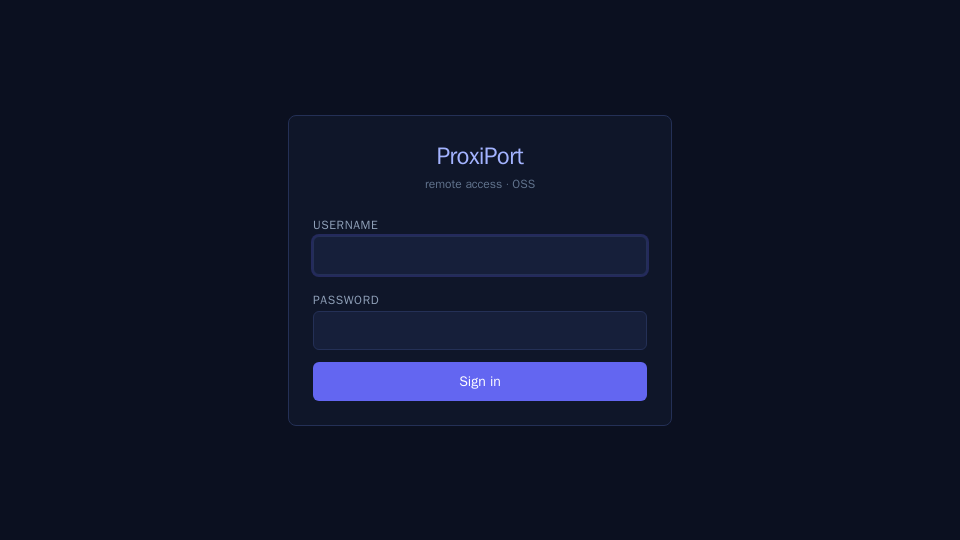
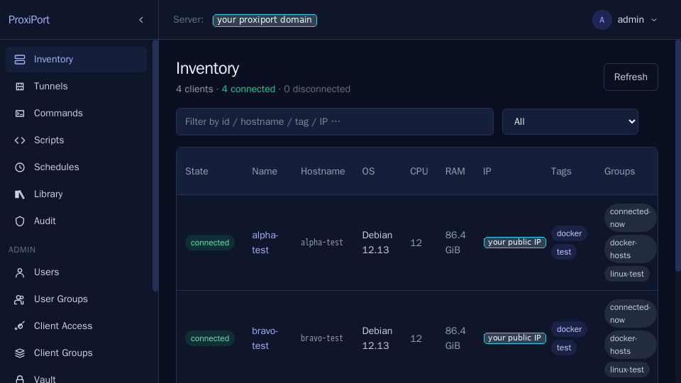

What changed from openrport¶
ProxiPort imports the openrport Go server and agent tree at the MIT-licensed state of the fork (see origin for the full lineage). This page is the concrete, behaviour-oriented diff for anyone migrating from rport or openrport.
Removed¶
The plus/ plugin scaffolding¶
openrport's source tree contained a directory called plus/ whose
sole function was to load a separately-distributed proprietary plugin
binary (the "Plus" plugin) that gated several enterprise features.
The Plus binary itself was never in any public source repository — it
was distributed by the previous upstream maintainer under a
proprietary licence, behind a paywall.
ProxiPort deletes plus/ entirely along with every IsPlusEnabled
capability gate. We do not ship the proprietary binary, do not load
it, and do not reimplement Plus features as a licence-gated commercial
add-on. Features that previously lived behind the gate (OAuth/OIDC,
RBAC, alerting, …) will be reimplemented in the open under AGPL.
User-visible effect: API endpoints that returned a Plus status
(GET /plus/status, etc.) are gone; the corresponding settings in
proxiportd.conf are accepted but no longer have any effect; the SPA
does not show Plus-only configuration pages.
The proprietary Vue/Nuxt frontend¶
Upstream rport/openrport shipped a web frontend, but only as a prebuilt JavaScript bundle. The source for that frontend was never released as FOSS. Because the source was never available, we could not have forked it, and we made no attempt to.
The frontend in frontend/ is original work: a SvelteKit SPA written
from scratch in TypeScript against the existing REST API. It is
AGPL-licensed along with the rest of the tree.


User-visible effect: the operator-facing web UI looks different. Functional surface area is broadly the same — clients, tunnels, commands, scripts, schedules, monitoring, library, vault, users, client-auth, client-groups, API tokens, audit log — but the rendering is now Tailwind/Svelte rather than Vue/Nuxt, and a few less-used pages are still being reimplemented (see open issues for the running list).
The tacoscript interpreter¶
Upstream let you set interpreter: "tacoscript" on a command or a
script, which made the agent hand the file to a tacoscript binary —
a separate third-party tool that neither rport nor ProxiPort ever
installed for you.
ProxiPort removes it in v0.2.0. It was a menu item that could not
work: both places the SPA offered it were command forms, and the
server rejected tacoscript for commands outright, so choosing it
returned 400. tacoscript is no longer an accepted interpreter
value and is gone from the API schema and the SPA.
If you actually run tacoscript, nothing stops you: the server does not
validate the interpreter of a script, so an alias or an absolute path
(/usr/local/bin/tacoscript) still works. The only change is that
ProxiPort no longer writes the script with a .yml extension for you.
Some upstream API quirks¶
We have fixed a small number of inherited bugs where the upstream API behaviour was clearly unintended. These changes are intentional deviations from upstream, and the SPA is the only first-party consumer that depended on them:
GET /api/v1/schedulesused to return a double envelope{"data":{"data":[…],"meta":{…}}}because the handler re-wrapped the manager's already-wrapped payload. ProxiPort returns the single-envelope{"data":[…],"meta":{…}}like every other list endpoint. The SPA accepts either shape, so older third-party clients written against the buggy response are not broken.
Kept as-is¶
The pieces that gave rport / openrport their value are kept exactly:
- the chisel-based SSH-over-WebSocket tunnel transport,
- the REST API surface (
/api/v1/*), - the agent control-channel protocol,
- the
proxiportd.conf/proxiport.confTOML config formats (option names and tags are structurally compatible with upstream'srportd.conf/rport.conf— see migration for details), - the SQLite (default) and MySQL datastore options,
- the BDD test harness shape,
- the systemd unit conventions.
Renamed¶
| Upstream | ProxiPort |
|---|---|
rportd / openrportd |
proxiportd |
rport (agent) / openrport (agent) |
proxiport |
/etc/rport/ |
/etc/proxiport/ |
/var/lib/rport/ |
/var/lib/proxiport/ |
systemd unit rportd.service |
proxiportd.service |
rportd.conf |
proxiportd.conf |
rport.conf |
proxiport.conf |
Planned for v0.2 and beyond¶
These are tracked, not promised. Filed here so contributors can see the direction of travel before any code lands.
- OIDC / OAuth login. First-class identity-provider login as an open-source replacement for the upstream Plus plugin's SSO. See API authentication for the current local-user model the OIDC flow will sit alongside.
- Extended group permissions (RBAC). Per-group policy file
(YAML) layered on top of the existing
client groups and permissions
model, so operators can express "this group can run scripts on
hosts tagged
prodbut notinfra" without code changes. - Alerting / notification dispatch. SMTP, Slack, and generic webhook sinks for the monitoring rule engine, replacing the proprietary alerting that used to ship with the upstream Plus plugin.
- Sandboxed NoVNC demo. The public ProxiPort demo will gain a pre-opened NoVNC tunnel terminating at a network-jailed Firefox container that can reach only a baked-in offline Wikipedia mirror — so visitors can exercise the proxy feature end-to-end without ProxiPort itself operating an unrestricted web kiosk.
Licence change¶
The combined work changes from MIT (upstream openrport / rport) to AGPL-3.0-or-later (ProxiPort). The inherited MIT code stays under MIT — see LICENSE-MIT for the verbatim original notice and origin for the rationale.
If you contribute to ProxiPort, your contribution is licensed under
AGPL-3.0-or-later (inbound = outbound). See CONTRIBUTING.md.